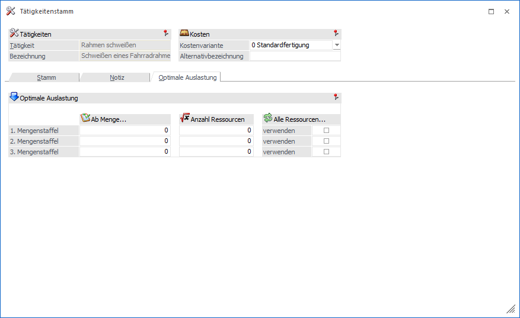

Für eine optimale Auslastung der Ressourcen kann im Register "Optimale Auslastung" vordefiniert werden, wie viele Ressourcen ab einer bestimmten Produktionsmenge herangezogen werden sollen. Diese Definition kann auf 3 Mengenstaffeln aufgebaut werden.

Folgende Eingabefelder und Information stehen zur Verfügung:
Ø Ab Menge…
An dieser Stelle erfolgt die Eingabe der Produktionsmenge, ab welcher eine erhöhte Anzahl von Ressourcen verwendet werden soll.
Ø Anzahl Ressourcen
An dieser Stelle wird die Anzahl der Ressourcen hinterlegt, welche ab der "Ab Menge…" genutzt werden sollen.
Beispiel
Es stehen fünf Montageplätze zur Verfügung. Große PPS-Aufträge (Menge ab 100 Stk.) sollen aber nicht auf alle Montageplätze aufgesplittet werden, sondern es sollen nur maximal 2 Plätze für einen Auftrag genutzt werden. Die maximale Anzahl der Ressourcen ist daher 2 und die "Ab Menge…" 100. Hieraus ergeben sich folgende Vor- und Nachteile:
ü Vorteil
Es stehen noch
Ressourcen zur Verfügung, um andere PPS-Aufträge zu bedienen. Die Tätigkeiten
werden nicht auf eine große Zahl von Ressourcen aufgeteilt, was wiederum
Nachschub und Logistik einfacher und effektiver macht.
ü Nachteil
Die Tätigkeit wird
nicht in der kürzest möglichen Zeit realisiert.
Ø Alle Ressourcen verwenden
Es werden alle verfügbaren Ressourcen reserviert.
Beispiel
Für eine Tätigkeit wird ein Facharbeiter 5 Stunden benötigt. In der Ressourcengruppe "Facharbeiter", sind 5 Facharbeiter definiert. Ist die Option aktiviert, so werden alle fünf Facharbeiter für je eine Stunde reserviert. Das Programm überprüft, ob auch die anderen Ressourcen, die in der Tätigkeit hinterlegt sind, in ausreichender Zahl vorhanden sind. Hieraus ergeben sich folgende Vor- und Nachteile:
ü Vorteil
Der PPS-Auftrag wird in
der kürzest möglichen Zeit realisiert.
ü Nachteil
In dieser Zeit können
keine anderen Tätigkeiten (d.h. PPS-Aufträge) auf diese Ressourcen zugreifen und
es existieren keine Reserven für diese Ressourcen. Werden diese Ressourcen für
Tätigkeiten in anderen Aufträgen benötigt, so tritt bei diesen ein Stillstand
ein.